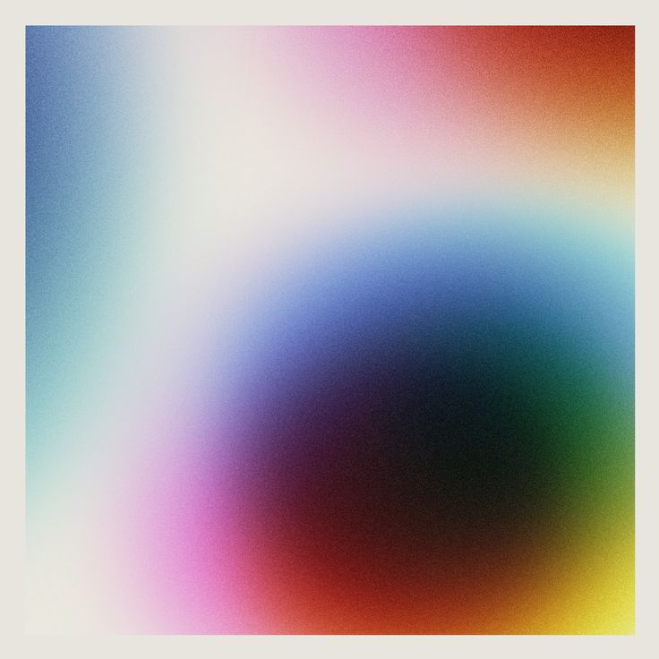

Love is one of the most complex and profound human experiences, shaping our emotions, relationships, and sense of self. It manifests in many forms—romantic, platonic, familial, and even self-love—each carrying its own weight and significance. Love can be a source of immense joy, bringing warmth, security, and a deep sense of belonging. It has the power to elevate ordinary moments into something extraordinary, turning a simple glance, a gentle touch, or a kind word into something meaningful and lasting.
At its best, love is transformative. It allows people to see the world through a lens of compassion, fostering connection and understanding even in the face of conflict. Love teaches patience and selflessness, as it often requires individuals to put another person’s needs before their own. It is the force that drives people to commit, to endure, and to grow together despite the inevitable trials of life.
However, love is not always easy. It can be messy, painful, and at times, deeply heartbreaking. The vulnerability that comes with love means opening oneself up to the possibility of loss, disappointment, or rejection. It requires trust, effort, and sometimes, the courage to let go when holding on causes more harm than good. Even in its most difficult moments, love is a teacher—revealing truths about oneself and offering opportunities for growth.
Romantic love, in particular, is often idealized, yet it is a journey of learning and adaptation. It starts with infatuation, an exhilarating phase where everything feels new and exciting. But as time passes, love deepens into something more stable and enduring, requiring both partners to nurture it continuously. Real love is not just about passion but also about partnership, understanding, and the willingness to face challenges together.
Beyond romance, love extends to friendships, where loyalty and shared experiences create unbreakable bonds. It exists in families, where unconditional love supports and sustains individuals through life’s ups and downs. And perhaps most importantly, love must be directed inward. Self-love is the foundation upon which all other forms of love rest, allowing individuals to give and receive affection without losing themselves in the process.
Love is a paradox—both fragile and unbreakable, exhilarating and terrifying, uplifting and devastating. Yet, despite all its contradictions, it remains the most powerful and universal force in human existence, shaping cultures, inspiring art, and giving life its deepest meaning.